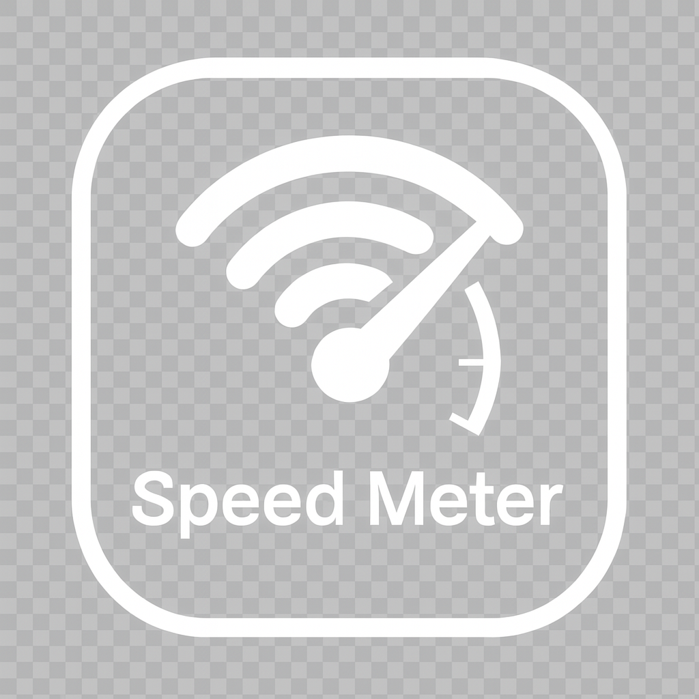
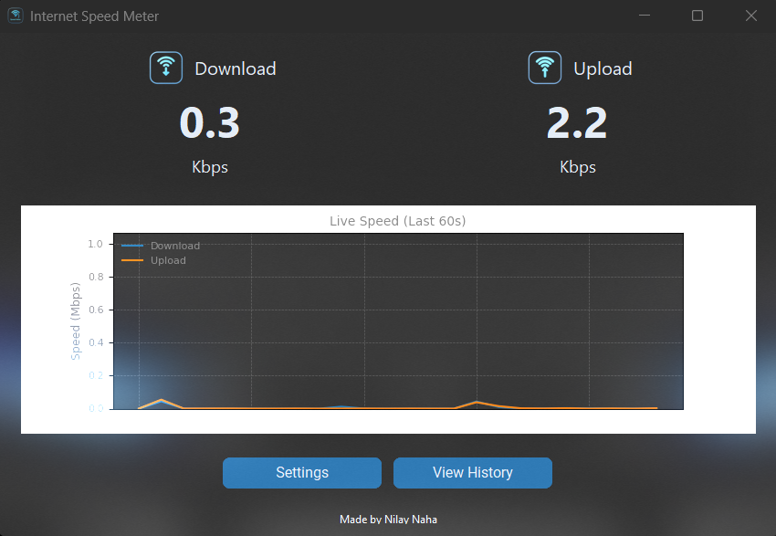

A sleek, real-time internet speed monitor that lives in your taskbar. Modern design meets powerful functionality, built exclusively for Windows.

Visualize your network stability with a scrolling graph that displays your speed over the last 60 seconds.
Get native Windows notifications the moment your internet speed drops below a threshold you define.
Hides neatly in your system tray, showing live speed updates in the tooltip without cluttering your taskbar.
Switch between light and dark modes, adjust the refresh rate, and configure auto-start settings with ease.
Ready to take control of your network monitoring? It's free and ready to go.
 Download for Windows
Download for Windows